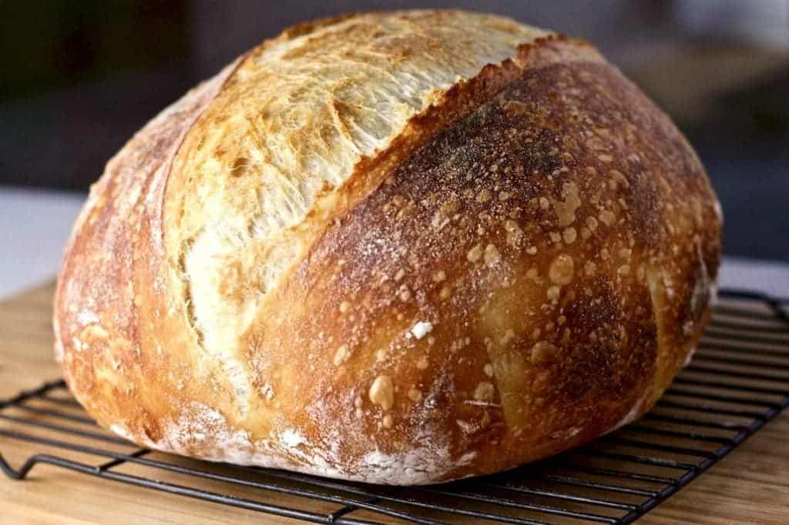

Sourdough Bread has first been dated back to the 3700 BCE and was excavated in Switzerland, however the origin of the Sourdough fermentation is originated from the agriculture from Egypt several thousand years earlier.
Sourdough remained the usual form of leavening down into the European Middle Ages until being replaced by barm from the beer brewing process, and after 1871 by purpose-cultured yeast.
